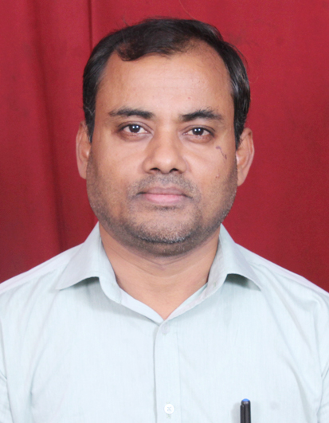

|
 |
Pankaj Kumar Mahto |
An astute professional having experience in web design, Software Development and Software Trainer with having 12 years of expertise in handling multi-tier architecture & Client/Server using C, C++, ASP.Net, C#, Java(Core + Advanced), MS SQL Server 2008, MySQL, HTML5, CSS3, Node.js, Express, React.js using other development tools like Eclipse, Dreamweaver, Wampserver.
| Operating Systems: | Linux, Windows 10/11 |
| RDBMS: | MySQL, Oracle 11g, MS Access |
| Front End: | HTML5, CSS3, BOOTSTRAP5, JAVASCRIPT |
| Languages: | Java(Core + Advanced), ASP.Net, C#, C, C++ |
| Degree/Certificates | Institute/Universities | Marks(%) |
|---|---|---|
| M. Tech in Computer Science | Himgiri Zee University, Dehradun, India | 76 |